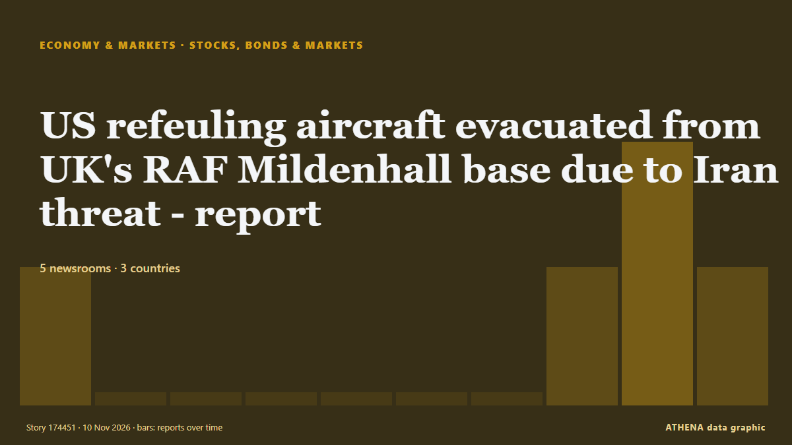

Économie, finance et marchés
SponsoriséPrésenté par Cybernetics and Artificial Intelligence Lab Welcome to the Cybernetics and Artificial Intelligence Laboratory, established at the Department of Business Administration of the National and Kapodistrian University of Athens. The lab is headed by Professor Dimitrios Thomakos. The lab aims to do research that can be published in top venues. Our research uses tools and methods of Artificial Intelligence, and lies in the following areas: - Forecasting - Decision making - Cyber security - Finance We are always looking forward to collaborating with exceptional students!
Les titres sont affichés en anglais, tels que publiés.
Veille des marchés - chiffres officiels
Dans quel sens évoluent les indicateurs officiels des marchés - hausse, baisse ou stabilité - avec la dernière valeur officielle et sa date, et l'actualité des marchés vérifiée par ATHENA. Valeurs officielles, pas des cours en temps réel.
Énergie
| 1 jour | 1 semaine | 1 mois | Valeur officielle | |
|---|---|---|---|---|
| Brent crude | ▼ | ▼ | ▼ | $107,03/bblDonnées officielles du 3 nov. 2026 |
| WTI crude | ▼ | ▼ | ▲ | $99,64/bblDonnées officielles du 3 nov. 2026 |
| US natural gas (Henry Hub) | ▲ | ▼ | ▼ | $2,63/MMBtuDonnées officielles du 3 nov. 2026 |
| European natural gas (1 mois · 3 mois · 12 mois)(1M · 3M · 12M) | ▲ | ▲ | ▲ | $25,49/MMBtuDonnées officielles du 1 sept. 2026 |
| Coal (Australia) (1 mois · 3 mois · 12 mois)(1M · 3M · 12M) | ▲ | ▲ | ▲ | $153,84/tDonnées officielles du 1 sept. 2026 |
Alimentation
| 1 mois | 3 mois | 12 mois | Valeur officielle | |
|---|---|---|---|---|
| Wheat | ▲ | ▲ | ▲ | $246,85/tDonnées officielles du 1 sept. 2026 |
Bourses américaines
| 1 jour | 1 semaine | 1 mois | Valeur officielle | |
|---|---|---|---|---|
| S&P 500 | ▼ | ▼ | ▼ | Mouvement inhabituel Direction seulement (indice © Cboe)Données officielles du 5 nov. 2026 |
| Nasdaq Composite | ▲ | ▲ | ▼ | Direction seulement (indice © Cboe)Données officielles du 9 nov. 2026 |
Taux, risque et dollar
| 1 jour | 1 semaine | 1 mois | Valeur officielle | |
|---|---|---|---|---|
| US 10-year Treasury yield | ▲ | ▼ | ▼ | 4,86 %Données officielles du 6 nov. 2026 |
| Market volatility (VIX) | ▼ | ▲ | ▲ | Direction seulement (indice © Cboe)Données officielles du 6 nov. 2026 |
| US dollar, broad index | ▲ | ▲ | ▲ | 121,88Données officielles du 6 nov. 2026 |
L'euro face aux autres monnaies
| 1 jour | 1 semaine | 1 mois | Valeur officielle | |
|---|---|---|---|---|
| EUR/USD | ▲ | ▼ | ▼ | 1,1193 USDDonnées officielles du 9 nov. 2026 |
| EUR/GBP | ▬ | ▼ | ▼ | 0,8343 GBPDonnées officielles du 9 nov. 2026 |
| EUR/CHF | ▲ | ▼ | ▼ | 0,9164 CHFDonnées officielles du 9 nov. 2026 |
| EUR/JPY | ▬ | ▼ | ▼ | 176,79 JPYDonnées officielles du 9 nov. 2026 |
| EUR/CNY | ▲ | ▲ | ▼ | 7,4689 CNYDonnées officielles du 9 nov. 2026 |
| EUR/TRY | ▲ | ▲ | ▲ | 56,120 TRYDonnées officielles du 9 nov. 2026 |
| EUR/NOK | ▬ | ▲ | ▼ | 10,5325 NOKDonnées officielles du 9 nov. 2026 |
Sources : Energy Information Administration des États-Unis (pétrole, gaz américain), FMI (gaz européen, charbon, blé), Trésor et Réserve fédérale des États-Unis (taux à 10 ans, indice du dollar) Cboe (VIX), S&P Dow Jones Indices (S&P 500) et Nasdaq (Nasdaq Composite), via FRED (Réserve fédérale de Saint-Louis) ; taux de référence de l'euro © Banque centrale européenne. Les chiffres sont les dernières valeurs officielles avec leur date, pas des cours en temps réel. Les directions sont calculées par ATHENA.
Crypto, ETF et actions dans l'actualité
- Seoul shares open sharply higher on US tech rally, falling oil prices Risque 2.5 10 nov.
- Russian stock indices mixed as main trading session closes Risque 0.0 10 nov.
- Anthropic unveils new Fable, Mythos models as competition heats up ahead of IPO Risque 0.9 10 nov.
- Asian stocks climb as sliding oil prices buoy sentiment Risque 1.0 10 nov.
- NYSE to settle tokenized stocks on Avalanche in planned 24/7 market Risque 0.0 9 nov.
- Binance’s CFO Leaves Company in Wake of $6 Billion Crypto Heist Risque 3.5 9 nov.
- ASX set to jump as Wall Street rallies; Nvidia tumbles amid ‘Chinese spy’ probe; Oil falls Risque 3.3 9 nov.
- Nvidia shares slide amid spy claims Risque 2.6 9 nov.
- Ethereum Foundation sued after firing employee over mandatory 'Source Seppuku' suicide pact Risque 1.1 9 nov.
- Overvaluing AI stocks may cause ‘bubble’ to burst, warns Bank of England boss Risque 1.3 9 nov.

Actions, obligations et marchésUS refeuling aircraft evacuated from UK's RAF Mildenhall base due to Iran threat - report
US aircraft evacuated from second UK base due to alleged Iran threat: Report The US military evacuated aircraft from an airbase in the UK after an alleged threat from Iran, according to a report by… de Middle East Eye
| 28 oct. | 128 |
|---|---|
| 29 oct. | 104 |
| 30 oct. | 115 |
| 31 oct. | 28 |
| 1 nov. | 72 |
| 2 nov. | 135 |
| 3 nov. | 124 |
| 4 nov. | 115 |
| 5 nov. | 117 |
| 6 nov. | 95 |
| 7 nov. | 42 |
| 8 nov. | 61 |
| 9 nov. | 112 |
| 10 nov. | 7 |
Gold gains more than 1% as softer oil prices ease inflation worries
Gold rose more than 1% on Monday as softer oil prices eased inflation concerns, while investors awaited key US inflation data and fresh signals from the Federal Reserve on its policy outlook. de MyJoyOnline
Pope leads mega mass in Buenos Aires, meets abuse victims
The mass drew the largest crowd of Pope Leo XIV's papacy to date as Argentines welcomed the first papal visit to the country in decades. de Free Malaysia Today
German chancellor warns he will block EU budget unless all member states agree to fund Ukraine
German Chancellor Friedrich Merz has threatened to block the EU budget unless all member states agree to finance Ukraine's €70 billion shortfall next year. de Ukrainska Pravda (English)
Japan Current Account n.s.a. below forecasts (¥3354.4B) in September: Actual (¥2372B)
Nigeria: Govt Secures $200m World Bank Funding to Boost Fish Production
[Vanguard] The Federal Government has secured a $200 million World Bank-backed financing commitment to boost fish production across the country through state governments, as part of efforts to reduce… de AllAfrica
Binance’s CFO Leaves Company in Wake of $6 Billion Crypto Heist
An on-chain tally puts the suspected Binance drain at $5.57 billion across three blockchains, as Tether and Circle froze $1.8 billion. de Decrypt
Brazil Interest Rate Cuts Stall on US Yields
Brazil's central bank has cut five times this year, but higher US rates and 4.58% inflation shrink its room. de The Rio Times
Meta’s Muse Ember matches Claude Haiku at a third of the cost per task
Meta has released Muse Ember, its smallest and cheapest AI model so far, the company announced on Monday. de The Next Web
Tesla to refund Cybertruck deposits as demand exceeds production
CEO Elon Musk made the announcement as the electric vehicle maker said it was winding down production of the pickup truck at its Texas factory. de Free Malaysia Today
Pope urges Argentina's Milei to put people before economy
Pope Leo XIV has urged Argentina to protect democracy and ensure economic growth benefits the poor, delivering a message to President Javier Milei over austerity, social welfare and political… de DW English
Pierrakakis: Defense a Priority as Eurogroup Hosts NATO’s Rutte
Eurogroup President Kyriakos Pierrakakis says defense is a priority as NATO chief Mark Rutte joins eurozone finance ministers. de to vima
France accelerates minimum wage hike in bid to quell protest
Unions slam the increase as insufficient, as the government seeks to defuse the unrest ahead of upcoming elections. de Al Jazeera English
El Nino threatens to worsen disease outbreaks, heat risks into 2027: WMO chief
World Meteorological Organization warns of rising health threats as El Nino intensifies, with forecasts helping countries prepare for extreme weather. de Anadolu Agency (English)
Seoul stocks buck gains on Wall Street to open lower
U.S. stocks are climbing Monday after oil prices eased back. de The Korea Times
French PM brings forward hike in minimum wage to calm protesters
PARIS, Nov 9 - French Prime Minister Sebastien Lecornu said on Monday he was bringing forward a planned hike in the minimum wage to December from January, as he sought to defuse a cost-of-living… de The Straits Times
Greenback pulls back ahead of US midterms; Bitcoin stabilises after crypto heist
The American currency is down 0.5% against a basket of other major currencies. de The Business Times
People warned to stock up on 6 food items as polar vortex snow forecast
The Met Office has warned that a weakening polar vortex could bring colder conditions and possible snowfall to the UK this winter. de Liverpool Echo
Impeached Paraguay Leader Charged over Shock Implosion of Bank
Paraguay's ousted president, Santiago Peña, has been charged over the collapse of Ueno Bank. de France 24 English
IMF launches Ukraine loan review that could unlock $1.67 billion
KYIV, Nov 9 - The International Monetary Fund began a review of Ukraine's lending programme on Monday that could unlock $1.67 billion in fresh financing for Kyiv as it struggles to shore up its… de The Straits Times
10 killed as car plunges into lake in Brazil
Five children were among the victims as the vehicle overturned and sank in Rio de Janeiro. de News of Bahrain
Kazakhstan Poverty Reduction Stalls Despite Economic Growth
Kazakhstan has made little progress in reducing poverty in recent years despite continued economic growth, according to the World Bank’s. de The Times of Central Asia
Israel issues tender for over 700 settlement units near Bethlehem in occupied West Bank
Palestinian commission says Israeli authorities have issued 28 tenders since start of 2026, including 18 covering 7,815 settlement units across occupied West Bank, including East Jerusalem. de Anadolu Agency (English)
Australia axe Labuschagne for New Zealand test series
MELBOURNE: Australia have dropped Marnus Labuschagne for next month’s four-test home series against New Zealand after a prolonged slump in form, selector George Bailey confirmed on Monday. de Business Recorder
Paraguay Holds Ex-President Peña Before Trial
A judge ordered ex-president Santiago Peña held before trial in the Ueno Bank case as new president Pedro Alliana takes over a shaken Paraguay. de The Rio Times
Australia regulator halts private credit fund on Bathla risks
The Australian Securities and Investments Commission stops Angas Securities from selling two managed investment schemes. de The Business Times
James Bond Shocker: Robert Pattinson and Nicholas Hoult Late Contenders for 007 After Auditioning for Denis Villeneuve
As James Bond casting rumors heat up, a couple more A-list actors have entered the mix: Robert Pattinson and Nicholas Hoult were among the stars who screen-tested to play the new 007. de Variety
Status Yellow fog warning issued for 12 counties as Met Éireann forecasts wet week
Mild weather is expected for the days ahead. de TheJournal.ie
Asian stocks rebound after AI rout
Markets rebound after tech rout triggered by Democrats' sweeping victory in US midterm elections. de Al Jazeera English
China's factory-gate inflation at fastest in nearly 4-1/2 years in October, while CPI rise moderates
BEIJING: China’s producer inflation accelerated to its fastest rate in nearly 4-1/2 years in October as higher global oil prices raised manufacturing costs, even as consumer inflation cooled amid… de Business Recorder
Asian stocks steady as AI, Middle East jitters recede
Doubts about demand for computer chips sent tech-heavy markets in Asia into some of their steepest falls in years during a turbulent week. de Free Malaysia Today
Strong US jobs data signals economic resilience
Analysis of stronger-than-expected US jobs numbers and their impact on markets, plus a look at the warning signs of financial distress and when companies should consider business rescue. de Moneyweb
Paraguay’s former president charged after bank collapse
The accounting black hole at Ueno Bank swallows public funds, leaves thousands of citizens without access to their deposits and pushes Paraguay into its worst institutional crisis in years. de Euronews English
Security officer detained after being filmed pointing gun at settlers near West Bank's Jericho
Following the incident, an investigation was opened at the Jordan Valley police station in the Judea and Samaria District on suspicion of unlawful use of a weapon. de The Jerusalem Post
CANEX WKND 2026 opens in Lagos, bringing together leading African and diaspora creatives, investors and policymakers
Creative Africa Nexus (CANEX) WKND 2026 has opened today in Lagos, bringing together leading creatives, investors, policymakers, business leaders and cultural figures from across Africa and the… de Capital Ethiopia